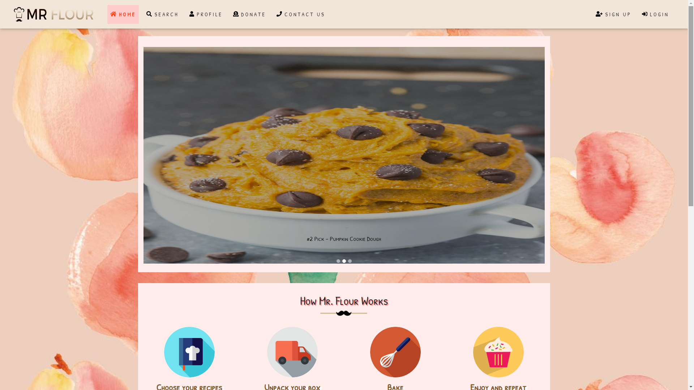
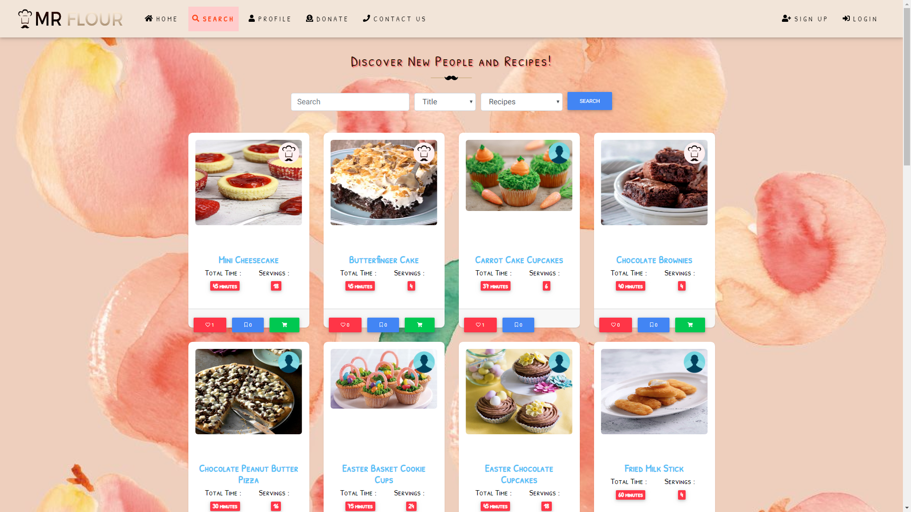
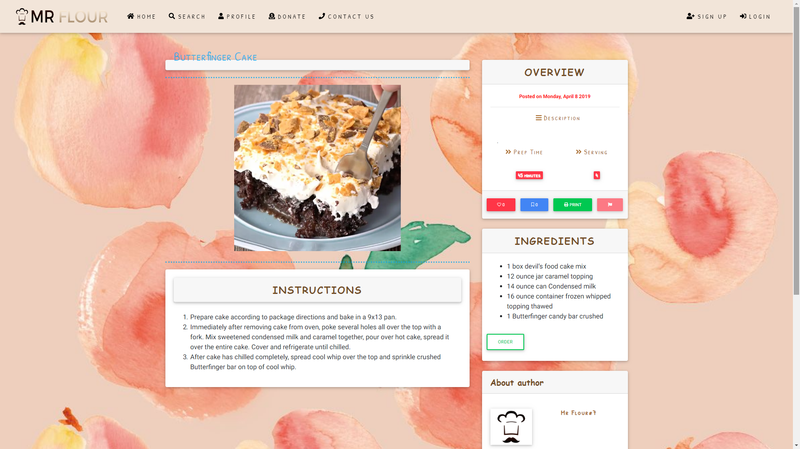
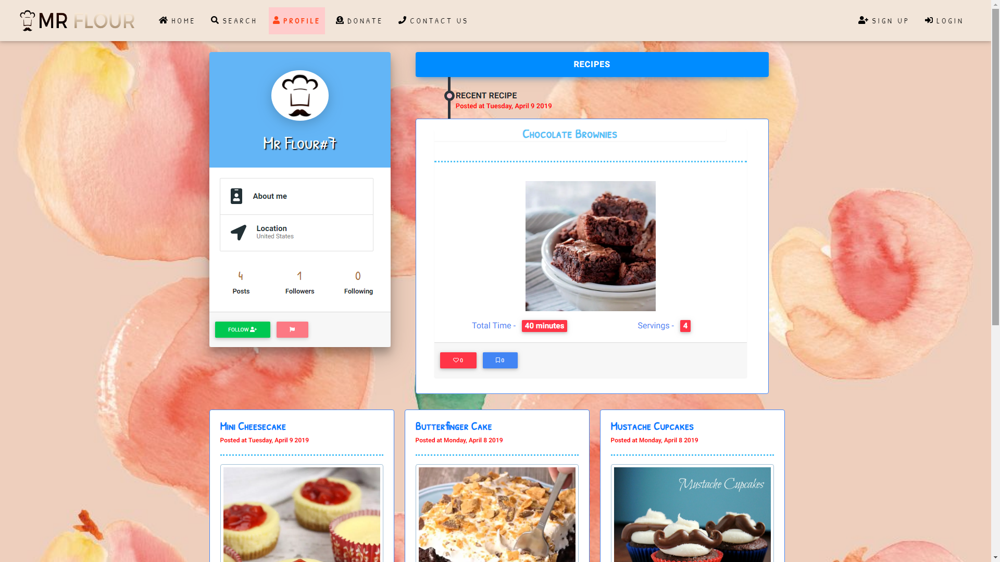
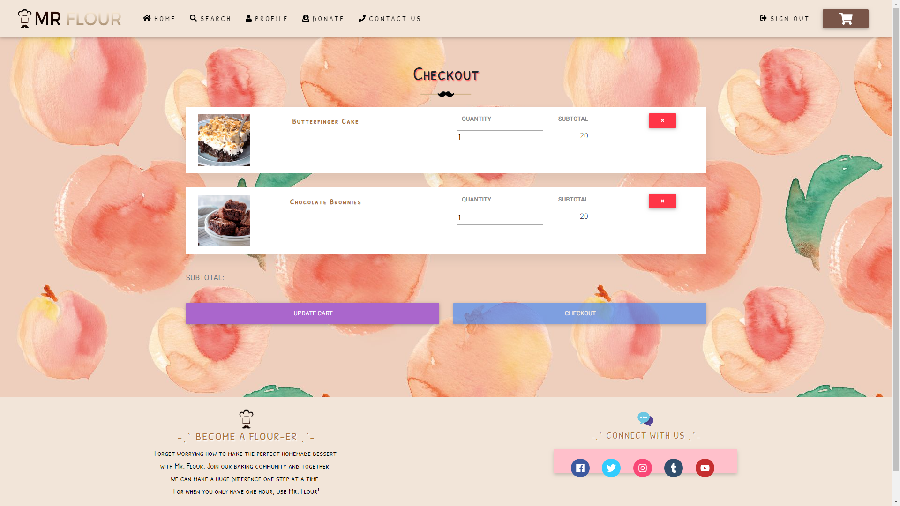
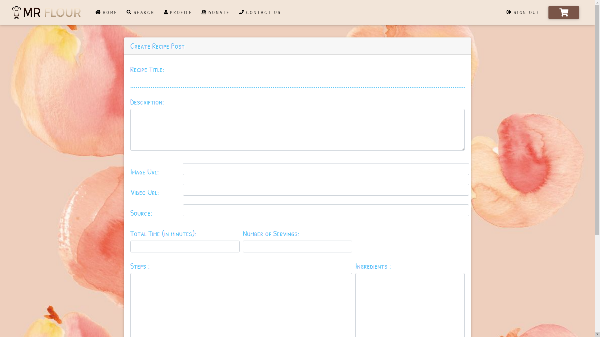
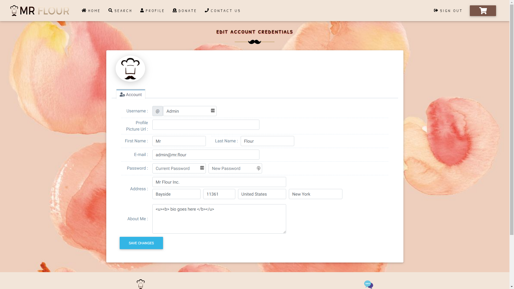

Bayside High School 2019 Capstone Project Winner
For privacy reasons source code is not publicly available.Overview
As part of the Computer Programming and Web Design program at Bayside High School, students in teams developed a capstone project based on the technologies learned in the program. This capstone project was presented at Queens Community College and given 1st place overall.
Screenshots
      
 Java
Java  Gradle
Gradle  HTML5
HTML5  CSS3
CSS3  JavaScript
JavaScript  jQuery
jQuery  Bootstrap
Bootstrap  IntelliJ IDEA
IntelliJ IDEA  Visual Studio Code
Visual Studio Code  Google Chrome
Google Chrome  Windows
Windows